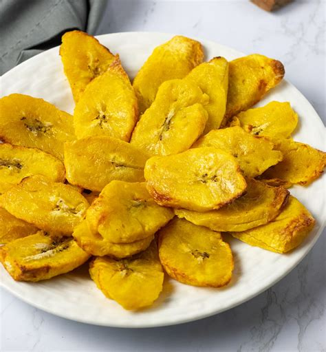

Plantain Fries

Description
This is like fried plantains, but they're not as good and low in fat. Dip them into condiments and spices for flavor. This can be prepared as a snack or part of a bigger meal. Use infused oil for more flavor - just make sure its oil base has a high smoke point.
Ingredients
- 100g plantains (half a plantain)
- 3g infused oil of choice (high smoke point)
- 4g spices
- salt
- 12g or more condiments
Steps
- Peel and slice plantain
- Preheat oven, toaster oven, or air fryer at 450F or higher if possible.
- Boil plantain slices in broth or water mixed with salt and spices. Start with just enough water to cover the plantains.
- Remove plantains from water. You can keep the starchy water for the condiment mix, or use in another dish. It's good.
- Cover plantains in oil
- Cook plantains in oven or air fryer for around 10 minutes. Keep at one layer if possible.
- Prepare spice and condiment mixes for dipping
- Turn oven off, add plantains to dish